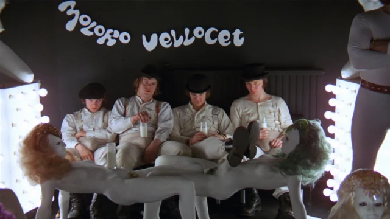

- Stanley Kubrick
- Malcolm McDowell
- Adrienne Corri

A Clockwork Orange is a 1971 dystopian crime film adapted, produced, and directed by Stanley Kubrick, based on Anthony Burgess's 1962 novel of the same name. It employs disturbing, violent images to comment on psychiatry, juvenile delinquency, youth gangs, and other social, political, and economic subjects in a dystopian near-future Britain.